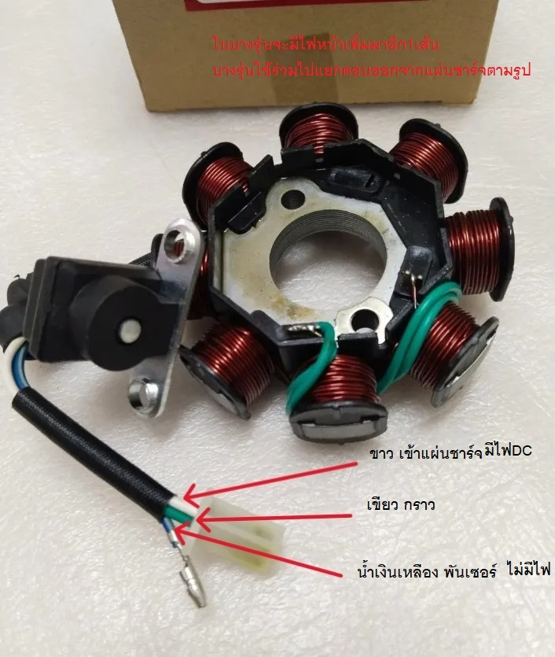
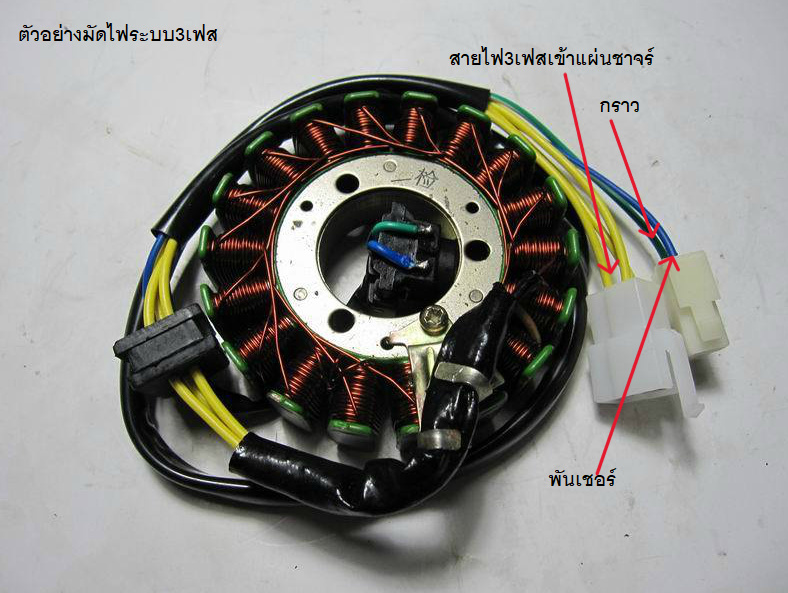

ไล่ระบบไฟชาจรถ1เฟส [ไฟขึ้นจากมัด1เส้น]
ไล่ระบบไฟชาจรถ1เฟส
วิธีไล่เช็คระบบไฟชาจ 1เฟส [ไฟชาร์จจากมัดเส้นเดียว]
อาการ เเบ็ตเตอร์รี่หมด แล้วสตาทไม่ติด แบ็ตหมดเเล้วไฟไม่ออกหัวเทียน เเบ็ตเตอรี่มีไฟขี่ได้ปกติ ถอดเเบตดับ - แบ็ตหมดบ่อย ต้องเปลี่ยนแบ็ตบ่อย ไฟหน้าขาดบ่อย แค่รุ่นที่เป็นระบบชาจไฟ1เฟสเท่านั้น [ผู้ซ่อมต้องมั่นใจว่าแบ็ตเตอรี่ไม่เสียหรือเสื่อมสภาพ]
วิธีการแยกระบบ1เฟสเเละ3เฟส ให้ผู้ซ่อมทำการเช็คดู สายไฟที่ขึ้นจากมัดไฟ จะต้องมีเส้นไฟติดเครื่อง [ไฟเข้าแผ่นชาร์จ] เเค่1-2เส้น คือ โหลดไฟหน้า1เส้นและโหลดไฟชาร์จ1เส้น รูปภาพผู้เขียนจะยกตัวอย่างของค่ายHonda


กรณีสายคนละสีไม่รู้เส้นไหนเป็นเส้นไหน ให้ผู้ซ่อมทำการไล่เช็คทีละเส้นว่าเส้นไหนเป็นกราว โดยการนำมิเตอร์ 1เส้นจิ้มที่ขั้ว+เเบตเตอรี่เเละทำการนำ1เส้นที่เหลือของมิเตอร์ไล่จิ้มเช็คดูทีละเส้น เส้นไหนจิ้มเเล้วไฟมาเส้นนั้นคือกราว กรณีจะหาเส้นไฟ ให้ผู้ซ่อมทำการจิ้มขั้ว-เเบ็ตเตอรี่และไล่จิ้มสายที่ออกจากมัดว่าเส้นไหนไฟมา กรณีไม่มีไฟออกเลยให้ผู้ซ่อมทำการเช็คมัดไฟ ซ่อมเเซม-หรือเปลี่ยนใหม่
กรณีไฟ-กราวออกจากมัด ให้ผู้ซ่อมทำการไล่เช็คสายขึ้นไปที่แผ่นชาร์จ โดยการวัดไฟที่ออกจากแผ่นชาร์จ ต้องดันกระเเสของแบ็ตเตอรี่เพิ่มได้1-2vdc ขณะติดเครื่องยนต์ ตัวอย่าง เช่น วัดไฟเเบตเตอรี่ได้ 12.4vdc ขณะยังไม่ติดเครื่อง จะต้องวัดได้เกิน 12.4vdc ในขณะติดเครื่อง และไม่เกิน 13.5-14.7vdc
กรณีตอนติดเครื่องเเล้ววัด กระเเสไฟดันเข้าแบ็ตเตอรี่ไม่เพิ่ม หรือน้อยกว่าตอนยังไม่ติดเครื่อง ให้ผู้ซ่อมสัญนิฐานว่า แผ่นชาร์จเสีย ***ผู้ซ่อมต้องมันใจว่าสายที่ขึ้นมาทั้งหมดในระบบชาจไม่ขาดใน*** กรณีนี้ อาการรถจะเเบตเตอรี่หมดบ่อย ถอดเเบ็ตเเล้วสตาทไม่ติด[ในกรณีรถสตาทเท้า]
กรณี ไฟชาจเกินขึ้นมาเยอะ [เกิน15VDC]ขณะสตาทเครื่อง-เร่งเครื่อง คืออาการแผ่นชาจร์ Overcharg หรือชาจเกิน อาการคือ หลอดไฟขาดบ่อย เเบ็ตบวม ให้ผู้ซ่อมทำการเปลี่ยนแผ่นชาร์จ
หมายเหตุให้ผู้ซ่อมทำการไล่เช็คทีละขั้นตอน เอาให้แน่ใจว่า สายไม่ขาดเเละเป็นที่อะไรกันแน่ เพื่อไม่ให้สิ้นเปลืองเพราะสัญณิฐานและซื้ออะไหล่ผิดชิ้น